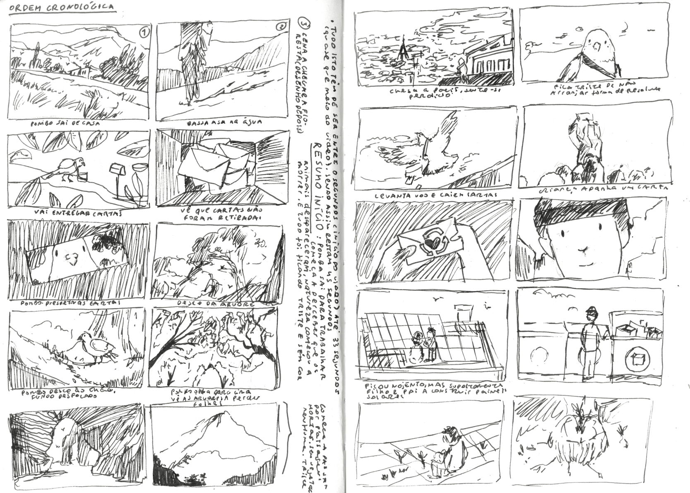
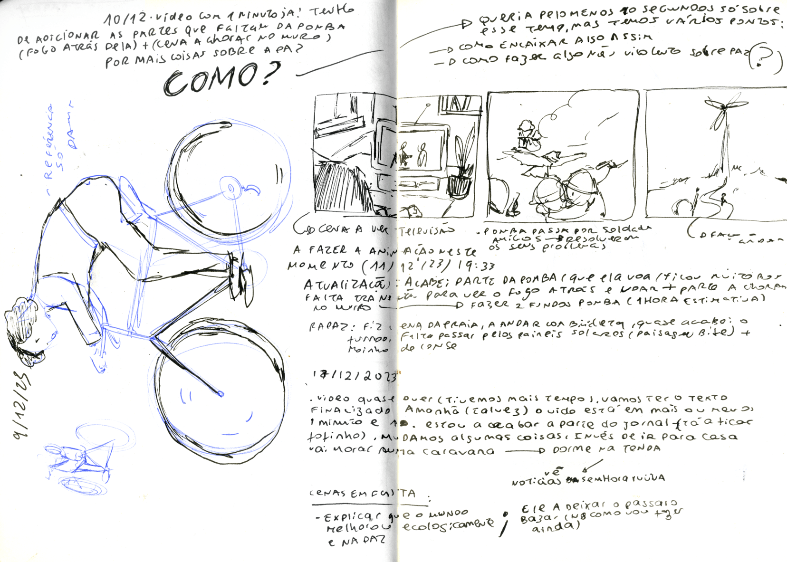

O Sonho da Floresta
editorial/ design/ art/
(2025)
The forest, being a powerful entity that regulates life, lives the great human dream day after day: to be reborn. So, I wanted to represent this life journey of the forest and its inhabitants, also adding natural human emotions, such as love (from the birds' point of view), friendship (from the bees), and isolation (from the leaves), until we reach the end of life. It is a project composed only of illustrations and text. All the drawings were done by me in analog format, and the color was applied in Procreate after scanning.

